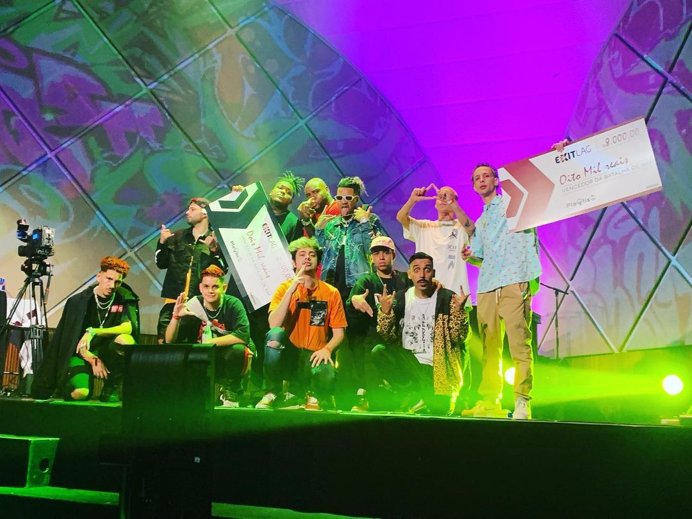

17 de novembro de 2020
Qualy, YoDa comandou o espetáculo que teve quase 300 mil espectadores únicos. O propósito de unir as diferentes culturas foi um sucesso. O programa teve pico de 78 mil espectadores interagindo com o chat e realizando a votação do melhor MC a cada batalha.
A Batalha de Rap foi uma edição especial do programa PlaYlist, lançado em agosto, fruto da parceria de YoDa com a dupla de DJs Tropkillaz – que foram responsáveis pelos beats de cada batalha.
“Vou levar esse momento para o resto da minha vida. A gratidão e o respeito que ganhei de toda comunidade do Rap é algo sensacional, que precisar ser levado como exemplo para as outras comunidades. Estou muito feliz que eles puderam entender o que é brincadeira e o que é trabalho sério. Só tenho a agradecer pela dedicação e pelo carinho de todos e fico ainda mais motivado pra seguir evoluindo e entregando o melhor conteúdo sempre”, celebrou YoDa.
“Para mim, é sempre uma honra poder participar de um projeto com o YoDa. Foi muito legal ver a alegria dos MCs durante e depois do evento, e esperamos que esse exemplo fortaleça ainda mais a comunidade do Rap e possa promover novas interações com o mundo dos Games”, declarou Pedro Qualy.